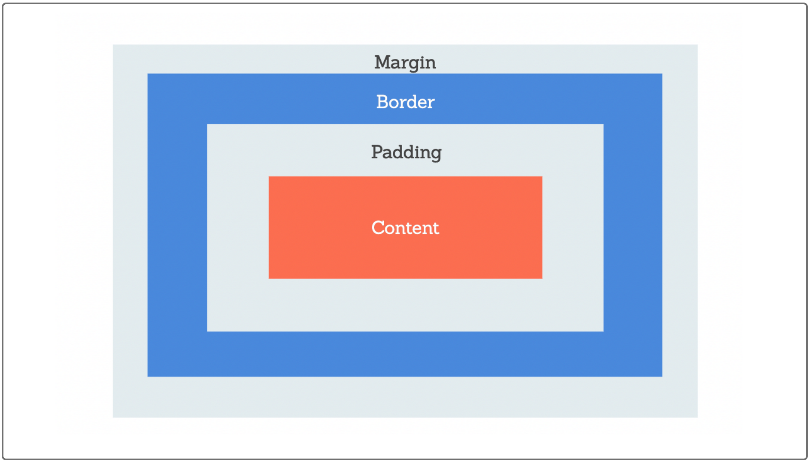

HTML
- URL stands for Uniform Resource Locater.
- Semantic Elements are elements whose names describe both their content and the role they play.
- The
<base>element can be used to set href and target attributes for all links. <img>attributes include src (source), alt (short descriptive text), height/width, and loading (eager|lazy to prioritize loading above/below the fold).
CSS
box-shadow: [x-offset], [y-offset], [blur], [radius], color= syntax for box-shadow attribute- The box model shows how objects are sized and flow. Visit MDN for more info
- CSS styles can be used inline or via linked stylesheet using
<link rel="stylesheet" href="./assets/style.css">
Git
- Git version control & Workflow
git status= check the branch you're currently on. Run early and often.git checkout [branch]= switch to another git branch. Note: option-bcan be used to create a new branch.git add= stage files for commit (use-Afor all files).git commit -m "your commit message"= commits the changes, preparing them for push to remote branch.git pull origin main= confirms we have the most recent version of the main branch before push.git push origin [branch]= push your local branch to the remote branch.- GitHub is an online repository for sharing and updating code. Git is version control and although there are other online git repositories, github is popular.
- What is git fast-forwarding? When you try to merge one commit with a commit that can be reached by following the first commit’s history, Git simplifies things by moving the pointer forward because there is no divergent work to merge together – this is called a “fast-forward.
- Divergent commits, post on stack overflow to resolve: More info
- Keywords to know: Repo|repository, branch, markdown, commit, pull request (PR), push, merge, issue
Click for more info
JavaScript
- My notes here